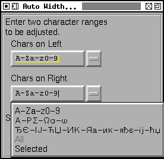
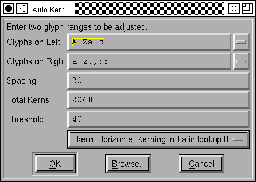

幅の自動設定

幅の自動設定(A)... コマンドは、フォントの適切な幅を (より厳密に言えば、左と右のサイドベアリングの適切な値を) 設定します。このコマンドは、指定されたグリフのすべての可能な組合せを調べます (300 個よりも多くのグリフを指定した場合、メモリを使い尽くすことを避けるために、最初の 300 個のみを調べます (300×300 はかなりの容量を食います))。
審美的に見て一様でない用字系を混ぜようとしないでください。ラテン文字の“I”とヘブライ文字のアレフの間の幅を自動設定すると、FontForge はまったく混乱してしまうでしょう。ラテン文字、ギリシャ文字、キリル文字は共に進化してきた文字群で、同様の形をもっていますので、通常は混在可能です。
幅の設定のためには、2 種類のグリフリストを指定する必要があります。片方は左側にくるグリフ (右サイドベアリングが調節されます) のリストで、片方は右側に来るグリフ (左サイドベアリングが調節されます。私はそれが逆に聞こえることは分かっていますが、それに関してはあまり気にしないでください) のリストです。もちろん、これら 2 つのリストの内容を同じにすることもできます。コマンドを適用する対象は、フォント内のすべてのグリフか (もちろん 300 字以内に限られます)、選択中の全文字か、A〜Z, a〜z と 0〜9 のグリフか、ギリシャ文字やキリル文字でそれと同様な文字グループか、自分で指定したグリフリスト (グリフそのものによる指定と範囲指定の両方が可能で、“ace-g”という指定は a, c, e, f, g の各文字のグリフを意味します (カンマとスペースをリスト中に置いた場合、それらはグリフとして扱われます。ハイフンを指定したい場合は、最初か最後に置いてください。“-a-z”とするとハイフンと a〜z の全文字の意味になります)) のどれかを選ぶことができます。非 ASCII 文字の入力に関する情報についてはメトリックビューのセクションを参照してください。範囲指定は Unicode のコードポイントに基づいて解釈されます。
 最後に、“スペーシング”テキストボックスにより、グリフをどれだけ詰めたいかを指定することができます。サンセリフの大文字 I を、それ自身 (それ以外には何もない) との間での自動幅設定を行ったときに、左右のサイドベアリングの和がスペーシングの設定値と等しくなります。デフォルトでは、スペーシングの値は小文字の n のサイズに設定されています。セリフや曲線を持つ文字がある場合、事情は四里複雑になりますが、それが実際に行われることの粗い近似になります。おそらく、自分自身の好みに合うように、この値を調整する必要があるでしょう。
左右のサイドベアリングを調整すると、(参照によって) その文字に 基づいているすべてのアクセントつき文字の左右のサイドベアリングも同時に調整することになります。アクセントつき文字の調節を直接行おうとするべきではありません (それらの文字が参照を用いていない場合は別です)。
自動カーニング
自動カーニングダイアログの見た目は、上に表示した幅の自動設定ダイアログとほとんど同じに見えます。
項目“スペーシング”のデフォルト値はわずかに異なり、大文字 I の左右のサイドベアリング値を使用します (このコマンドは、フォントの空きが既に設定されていることを仮定しているので、この値を用いることによって“n”のサイズを用いるよりは正確な値が得られるはずです)。
“しきい値:”に設定した値よりも、カーニング量の絶対値が小さいすべてのカーニングペアは無視されます。すべての文字間でカーニングを有効にしたい場合は、この値を 0 に設定してください。
いくつかのシステムは、取り扱うことができるカーニングペアの最大個数に制限があります。その場合、“カーニングの総数”にその値を設定してください。
グリフは、上の幅の自動設定ダイアログと同様に指定されますが、カーニングペアをファイルから読み込むこともできる点が異なります。例えば、右のダイアログでは多くの不要な文字の組合せがチェックされ、それらに対してカーニング情報が生成されます (“xq”の組合せにはカーニングがうまく働くでしょうが、英語 (および他の任意の言語) の文章にはほとんど現れません)。その代わりに、([ファイルを見る(B)...] ボタンを押して) 読み込むファイルを指定することができ、そのファイルに含まれているペアのみを調べます。
英語によく出てくるカーニングペアのいくつかを含むサンプルファイル (これは実際には Adobe Technical Note 5091 からコピーした物です) を提供しています。このファイルのフォーマットは、1 行に 2 つの文字を含む行の単純な並びです。それに対応するグリフの各ペアに対して、カーニングペアのチェックが行われます (行内の文字数が 2 文字よりも多かったり少なかったりする行はコメント行と扱われて無視されます) ファイルは Latin1 エンコーディングまたは UCS2 を使用することができます (UCS2 である場合、それはバイトオーダマーカ U+FEFF で始まらなければなりません)。グリフを U+xxxx (ここで xxxx は Unicode の符号位置) の形式で書くこともできます。ですから、“Av”は“U+0041v”と書くこともできます。
各グリフペアに対し、カーニング値は
<左のグリフの右サイドベアリング> + <右のグリフの左サイドベアリング> + <カーニング> =
<スペーシング> + <グリフ形状の許容範囲>
に設定されます。
“許容範囲”は、左右の端におけるグリフの形状を調べることによって決定されます (セリフに含まれる領域は無視されます)。2 つのグリフの最も近い接近距離を探し、誤差を算出するために複雑な平均化処理を行います。その誤差の値が、どのグリフもそこまで近づけた場合近すぎることになる <カーニング> を導き出す場合、その値はサイ調整されます。正確な方法は、バグが見つかるたびに変更の対象となります。
もし、<カーニング> の絶対値がしきい値よりも小さい場合、そのグリフのペアに対してカーニング情報は生成されなくなります。アルゴリズム (と、それまでに存在した任意のカーニングペア) によって、"カーニングの総数" で指定したよりも多くのカーニングが生じる場合、新しいしきい値が決定され、<カーニング> (の絶対値) がこの新しいしきい値よりも小さいすべてのペアは削除されます。
カーニング情報は、基底グリフからそれを参照するアクセントつきグリフへ波及しません。これは、“Ve”のカーニング値は“Vè”のそれとはかなり異なるだろうからです。これは自動幅設定のふるまいとは異なることに注意してください。
カーニングは PostScript® フォントの一部ではなく、あなたがどのワードプロセッサを使っていても、カーニング情報は AFM ファイルから読み込む必要があることと、TrueType (および OpenType) フォントにはカーニングが内蔵されているが、Windows はどちらに対してもカーニングをサポートしていないことにご注意ください。